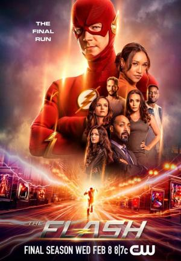

O investigador forense Barry Allen (Grant Gustin) sofre um acidente em seu laboratório: ele leva um banho de produtos químicos e, em seguida, é atingido por um raio. A partir disso, ele se torna capaz de canalizar os poderes do "Campo de Velocidade" e de se locomover com uma rapidez sobre-humana. De máscara e uniforme vermelhos, Barry assume a identidade do super-herói Flash e começa a usar suas habilidades para patrulhar Central City, contando com a ajuda dos cientistas da S.T.A.R. Labs.
